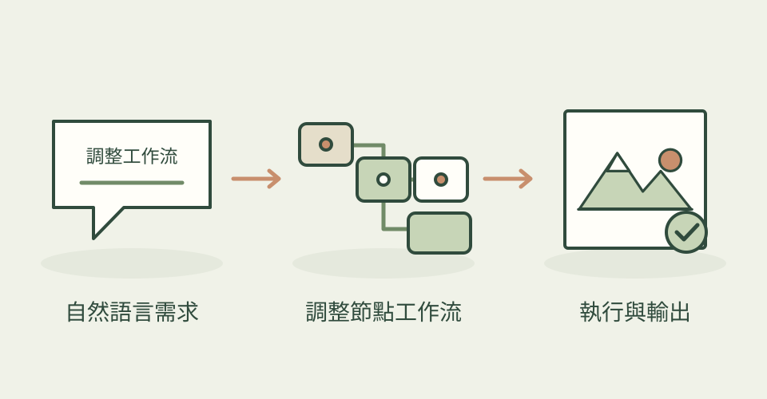

ComfyUI 的節點很有彈性，但管理工作流也需要時間。這個專案以 MCP 服務和側邊 agent 為核心，搭配 Skills 協助建立、調整與執行工作流。
它怎麼幫忙
它是工具與技能的組合。agent 可以讀取現有圖表、安排任務與調整節點；實際可做的內容取決於你的 ComfyUI、模型與安裝環境。
功能快速理解

讓 agent 讀取和調整 ComfyUI 工作流，再交給現有模型執行。
功能示意・本站繪製 放大查看可以這樣開口
這是一個可依需求修改的委託範例。
讀取我目前的角色生成工作流，說明每個重要節點，再幫我加入固定種子與批次輸出的步驟，先檢查後執行。
適合什麼工作
適合已經使用 ComfyUI，希望保留工作流控制權的美術與技術美術。
開始之前
- 準備工具
- 可用的 ComfyUI、模型和相容的 agent／MCP 設定；依選擇的本機或雲端環境配置。
- 使用成本
- 本機生成使用硬體資源；雲端、模型與 agent 服務依實際方案計費。
- 交付內容
- ComfyUI 工作流，以及依模型產生的影像、影片或音訊
- 先留意
- 並非單一免設定生圖 Skill。模型與節點環境仍需要準備。
作者與來源
本文依作者公開說明整理，沒有實際執行這個專案。功能插圖由本站繪製，原作者範例另行標示；並非本站執行技能的測試結果。GitHub 星數為專案總量，觀察時間為 2026年10月22日 08:28（台北時間）。
與前次快照相比增加 5 星；這不是 GitHub Trending 排名。